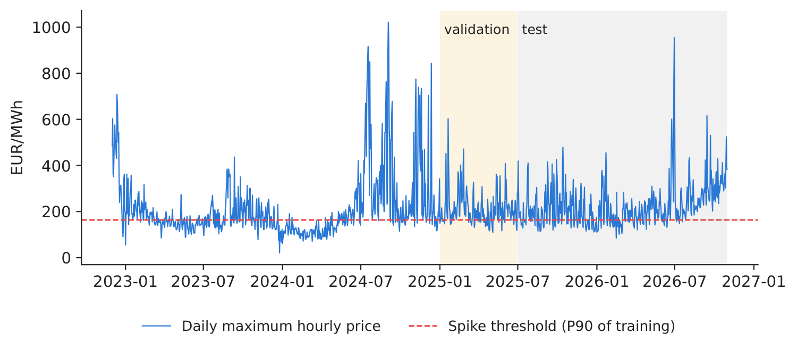
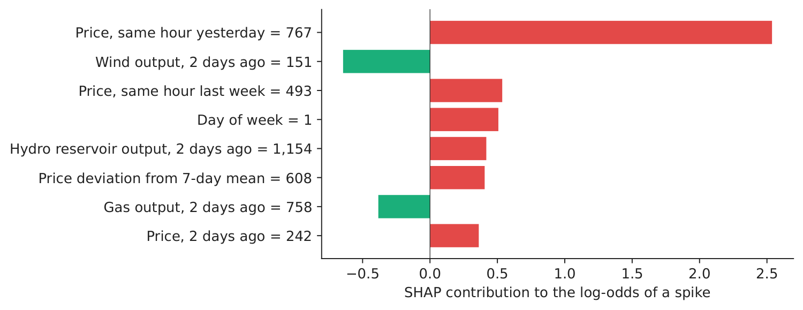
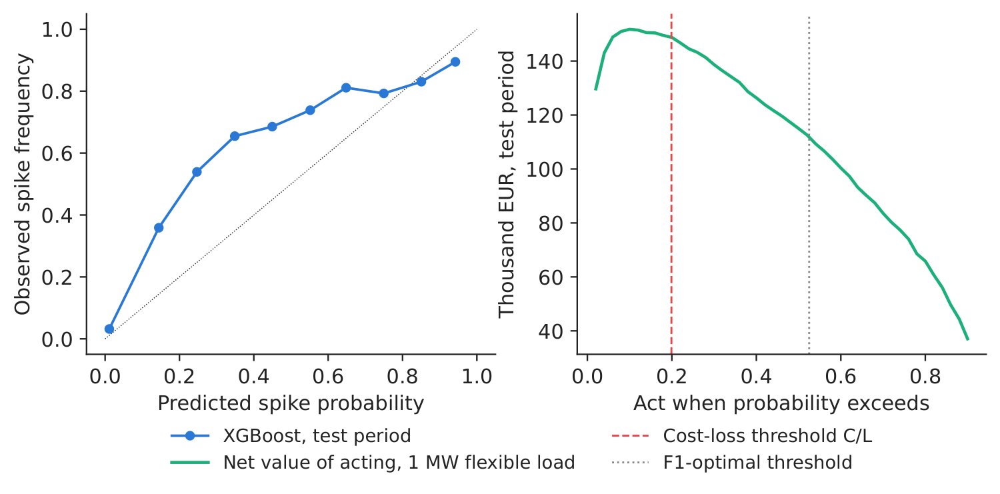
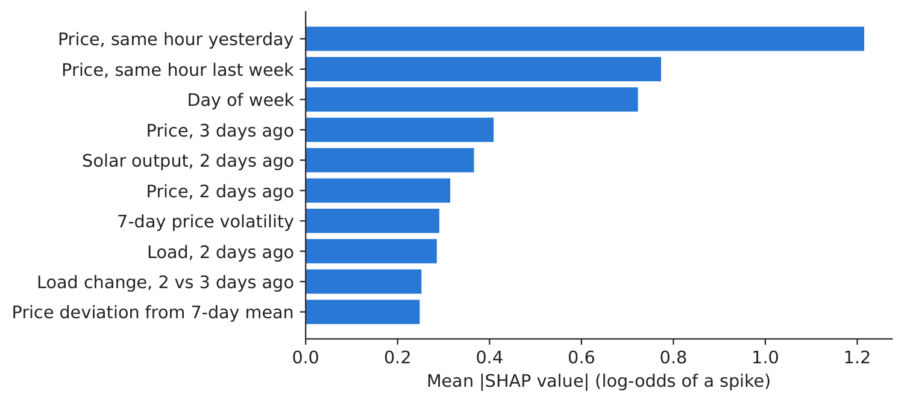

Case study 7 · Lecture 7
An explainable early-warning system for price spikes
Prof. dr. Daniel Traian PELE
Bucharest University of Economic Studies, Department of Statistics and Econometrics
Romanian Academy, Institute for Economic Forecasting
The paper
Andrei, A.-V., Pele, D.-T., Cramer, A.-A., Amza, A. & Diaconu, D. (2026). Explainable AI-based early warning system for electricity price spikes: Evidence from the Romanian market. Proceedings of the International Conference on Business Excellence, 20(1), 4820–4836. doi:10.2478/picbe-2026-0352
The business question
A large industrial consumer in Romania (a steel or cement plant) can shift part of its load out of an hour if it knows a day in advance; a supplier can hedge or call demand response; a battery operator can keep energy for the evening. Each of them asks the same question every morning, before the day-ahead auction closes at noon: will tomorrow have a price spike, in which hours, and why? The head of energy procurement must decide when to act on an alert — acting costs money (lost production, a hedge premium), not acting in a spike costs more. And the board wants to know why the model raises an alarm before trusting it.
What the paper did
Question. Can explainable artificial intelligence (XAI) identify the drivers of price spikes in the Romanian day-ahead market; is the residual load forecast a primary predictor; and can an operational early-warning system be built from interpretable balance indicators (p. 4821)?
Data. 5,000 consecutive hours of the OPCOM (the Romanian power and gas market operator) day-ahead market, March–September 2024; ENTSO-E (European Network of Transmission System Operators for Electricity) generation, load and day-ahead forecasts, oil, gas and carbon prices, temperature in 10 cities; 70 features; chronological split 80/10/10 (p. 4824–4826).
Method. Random Forest and XGBoost (eXtreme Gradient Boosting) forecasts explained with SHAP (SHapley Additive exPlanations) and LIME (Local Interpretable Model-agnostic Explanations); a warning score that combines nine indicator thresholds, weighted by their validation F1-score, with an alert threshold \(W^*=0.477\) chosen on the validation set; a high-price event is a price above the 90th percentile, 149.99 EUR/MWh (p. 4827, 4832).
Main findings of the paper.
- XGBoost explains 67.6 % of price variance on the test set (\(R^2\) = 0.676, MAE, mean absolute error 24.58 EUR/MWh) (p. 4828, Table 3); five-fold time-series cross-validation adds regime-specific evidence: mean \(R^2\) 0.542, with the June–July heatwave fold at 0.357 (Table 4).
- The most influential features are the previous hour's price (mean \(|\)SHAP\(|\) = 14.30) and the residual load forecast (10.13) (Table 5, p. 4830).
- The warning system reaches precision 0.470, recall 0.722 and F1 0.569 on the test set (Table 7, p. 4832); the residual-load indicator alone has a validation F1 of 0.792 (Table 8). The paper also reports a validation F1 of 0.800 and documents the spike frequencies of the two periods (24.0 % in validation, 10.8 % in test) (p. 4833).
- Missing a spike is “far more costly” than a false alarm, so the system favours recall (p. 4832); “interpretable balance signals retain their directional value”, complementing the price forecasts (p. 4834).
Related work of our group for Lecture 7: probabilistic price forecasts with distributional random forests (Andrei, Cepoi, Dumitrescu, Lessmann, Chiriac (Luchian), Pele & Petukhina, 2026, SSRN, Social Science Research Network 6872381, doi:10.2139/ssrn.6872381; Case 6); pretrained foundation models with conformal calibration for tail-risk forecasts in CEE (Central and Eastern Europe) markets (Jheng, Tak, Găman, Mazurencu-Marinescu-Pele & Pele, 2026, ECECSR (Economic Computation and Economic Cybernetics Studies and Research) 60(2), 267–290, doi:10.24818/18423264/60.2.26.14).
The method, step by step
Intuition first
Spikes happen when the system is tight: demand is high, the sun has set, the wind is weak, and yesterday was already expensive. A machine-learning model learns these combinations from history; SHAP then splits each alarm into the contribution of every input, so a manager can see why. The indicator score is a simpler, fully transparent version: a checklist of warning lights, each with a threshold.
A spike in hour \(t\) is \(S_t=\mathbb 1\{p_t>\theta\}\), with \(\theta\) the 90th percentile of training prices. The residual load is \(RL_t=L_t-\mathit{Solar}_t-\mathit{Wind}_t\) (paper eq. 1, with day-ahead forecasts). The classifier estimates \(\hat\pi_t=\Pr(S_t=1\mid\mathbf x_t)\) with gradient-boosted trees (\(\hat f(\mathbf x)=\sum_{k=1}^{K}f_k(\mathbf x)\), each tree \(f_k\) correcting the previous ones). SHAP writes each prediction as a sum of contributions, \(\hat f(\mathbf x_t)=\phi_0+\sum_j\phi_{j,t}\), where \(\phi_{j,t}\) is the average change in the prediction when feature \(j\) is added, over all orders of adding the features (the Shapley value from game theory). The indicator score is \(W_t=\sum_m w_m\,\mathbb 1\{x_{m,t}\ge\theta_m\}\), with thresholds \(\theta_m\) and weights \(w_m\propto F1_m\); an alert is raised when \(W_t\ge W^*\). Quality: precision \(=TP/(TP+FP)\) (share of alerts that were spikes), recall \(=TP/(TP+FN)\) (share of spikes that were caught), \(F1=2\cdot\)precision\(\cdot\)recall\(/(\)precision\(+\)recall\()\), with \(TP\), \(FP\), \(FN\) the true positives, false positives and false negatives. Decision rule: if acting costs \(C\) per MWh and an unhedged spike costs \(L\) per MWh, act whenever \(\hat\pi_t>C/L\) — for an operating decision, the company's own cost ratio sets the threshold.
In practice
Use the model to rank hours by spike probability and to explain them; set the action threshold from your own costs (\(C/L\)); recalibrate thresholds when the market regime changes.
Replicate it yourself
Notebook C7_notebook_EN.ipynb: hourly prices, load, solar, wind, hydro, gas and net imports (energy-charts.info). Training 2023–2024, validation January–June 2025, test July 2025 – October 2026 (11,567 hours).
Spike threshold: 163.42 EUR/MWh (P90 of training; paper: 149.99). Spike share: 10.0 % in training, 14.2 % in validation, 22.1 % in the test period.
Classroom implementation: our data contain no day-ahead forecasts, so the main models use only the information available at gate closure (12:00 CET, Central European Time on \(d-1\)): prices up to \(d-1\) and the realised load, solar, wind, hydro, gas and imports of \(d-2\) (day \(d-1\) is not yet metered); a second XGBoost classifier with the actual fundamentals of the delivery hour (perfect foresight) is shown for comparison only. No weather or fuels; a longer sample with a different regime.

Figure 1. Daily maximum price and the spike threshold.
Source: energy-charts.info; 12.2022–10.2026.

Figure 2. Top-10 drivers of spike alerts (SHAP).
Source: our XGBoost classifier; test period.
Table 1. Early-warning performance on the test period (July 2025 – October 2026). Best value in bold.
| Early-warning rule (test period) | Precision | Recall | F1 | Accuracy | AUC (area under the ROC curve, ROC = receiver operating characteristic) |
|---|---|---|---|---|---|
| XGBoost classifier (probability) | 0.823 | 0.517 | 0.635 | 0.868 | 0.946 |
| XGBoost price forecast \(>\) threshold | 0.808 | 0.723 | 0.763 | 0.901 | 0.950 |
| Indicator warning score | 0.682 | 0.443 | 0.537 | 0.831 | 0.861 |
| Naive: spike yesterday, same hour | 0.770 | 0.765 | 0.767 | 0.897 | 0.931 |
| XGBoost, actual fundamentals (perfect foresight) | 0.763 | 0.374 | 0.502 | 0.836 | 0.890 |
Source: our computation. Paper (test set, 2024): warning system precision 0.470, recall 0.722, F1 0.569 (Table 7).
What our data show. With gate-closure information only, the top three SHAP features are Price, same hour yesterday, Price, same hour last week and Day of week: past prices dominate. Our price lag is the same hour of day \(d-1\), the latest price known when bidding for day \(d\); the paper's other main driver, the residual load forecast (Table 5), is not in our data and enters our model only through its \(d-2\) value. The ML (machine learning) classifier separates spike and non-spike hours well (AUC 0.946); the indicator score is weaker (AUC 0.861, F1 0.537). The actual fundamentals of the hour (perfect foresight) do not improve the test results (AUC 0.890, F1 0.502), a sign that the link between fundamentals and spikes learnt in 2023–2024 changed in the test period. But a regime shift dominates the test period: spikes became daily evening events (22.1 % of hours vs 10.0 % in training), so the thresholds tuned on 2025 validation miss many of them (classifier recall 0.517), and the naive rule “a spike yesterday at the same hour” has the highest recall and F1 (0.767). The managerial lesson: when the market regime changes, recalibrate thresholds and keep a persistence benchmark in the monitoring.

Figure 3. Why the alarm on the highest test price (30 June 2026, 21:00, 954.6 EUR/MWh)?
Source: our SHAP values.

Figure 4. Reliability of the spike probability (left) and value of acting by threshold (right).
Source: our computation; test period; 1 MW flexible load, \(C\) = 30 EUR/MWh.
Decision number. At the highest test price the model gave a spike probability of 0.900. With an action cost \(C\) = 30 EUR/MWh and a loss \(L\) = 150.8 EUR/MWh (mean spike minus mean non-spike price in training), the cost–loss threshold is \(C/L\) = 0.199. Acting at that threshold with 1 MW of flexible load would have saved about 148.8 thousand EUR over the test period, versus 112.0 thousand at the F1-optimal threshold — for an operating decision, the threshold should reflect the company's own costs.
Discussion questions for managers
- In our 2025–2026 test, the persistence rule scores highest. What would you use each tool for, and how would you monitor and recalibrate them?
- Your board must approve an AI (artificial intelligence) tool. Is a SHAP explanation enough for them to trust an alarm? What else would you show?
- What are \(C\) and \(L\) for your company? How would the alert threshold change for a cement plant and for a battery operator?
- How often should thresholds be recalibrated, and who in the company should own that decision?
- The spike threshold is a percentile of the past. When spikes become daily, is “spike” still the right concept, or should you forecast the whole price distribution (Case 6)?
Limitations of the classroom replication
(i) Our models and thresholds are fitted once (training 2023–2024, validation January–June 2025) and not re-estimated during the test. (ii) Our main models replace the day-ahead forecasts of load, solar and wind by their values on \(d-2\), the last metered day, and use no weather or fuel prices (both pessimistic). (iii) The spike definition depends on the training percentile, which drifts with the price level. (iv) The cost–loss value assumes the flexible load can always be shifted and ignores the price impact of doing so.
Summary of Case 7
- QuestionWill tomorrow have a price spike, why, and when should we act?
- DataHourly RO (Romania) prices and fundamentals 2023–Oct 2026; spike = price above P90 of training.
- MethodXGBoost + SHAP; F1-weighted indicator score; cost–loss decision rule.
- ResultGate-closure information: top drivers Price, same hour yesterday, Price, same hour last week; AUC 0.946; regime shift: naive F1 0.767.
- DecisionAct when spike probability \(> C/L\) (0.199); recalibrate thresholds as the market changes.

Source: our XGBoost classifier on energy-charts.info data; SHAP on the test period, July 2025 – October 2026.
Abbreviations
| AI | artificial intelligence |
|---|---|
| AUC | area under the ROC curve, ROC = receiver operating characteristic |
| CEE | Central and Eastern Europe |
| CET | Central European Time |
| ECECSR | Economic Computation and Economic Cybernetics Studies and Research |
| ENTSO-E | European Network of Transmission System Operators for Electricity |
| LIME | Local Interpretable Model-agnostic Explanations |
| MAE | mean absolute error |
| ML | machine learning |
| OPCOM | the Romanian power and gas market operator |
| RO | Romania |
| ROC | receiver operating characteristic |
| SHAP | SHapley Additive exPlanations |
| SSRN | Social Science Research Network |
| XAI | explainable artificial intelligence |
The text, numbers, charts and tables of this page are those of the case brief; every number is computed by the case notebook on the course data.